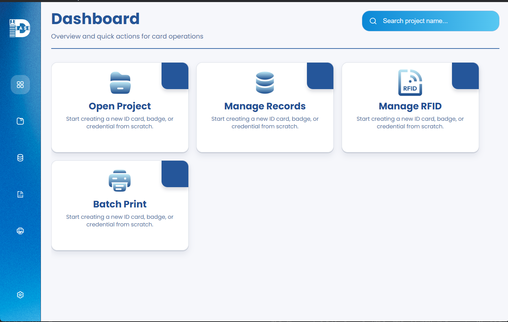
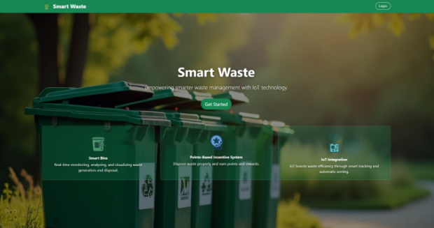
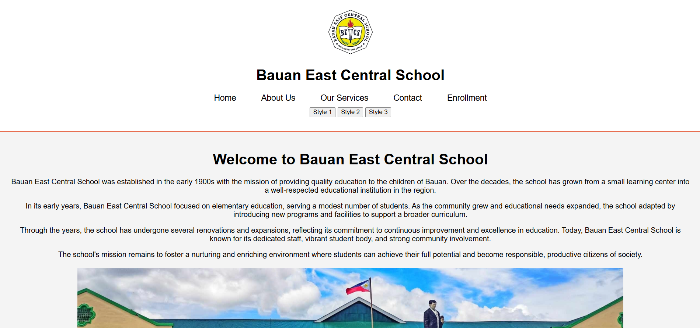

Projects

IDEase – On The Job Training
Problem Statement: The previous ID creation process at RAKSO CT was slow, inefficient, and limited by an outdated interface, which caused delays in daily operations.
Solution: We developed a cross-platform desktop application for ID design and printing that improved workflow efficiency and reduced manual effort. I contributed to the backend using Express and SQLite while collaborating with the team through version control and iterative testing.
Note: This project cannot be shown publicly because it is currently being used in a Rakso CT environment.

SmartWaste – Capstone Project
Problem Statement: Waste collection and monitoring in the target community was managed manually, leading to poor tracking, inefficient scheduling, and lack of accountability among collectors and residents.
Solution: We developed a web-based waste management system with role-based access control, allowing admins, collectors, and residents to manage schedules, track collection status, and monitor reports through a centralized platform. I contributed to the backend using PHP and MySQL, handling database design and role-based access logic while collaborating with the team through version control and iterative testing.

UBuy and Sell – Project
Problem Statement: Students at the University of Batangas relied on social media platforms and messaging apps to buy and sell items, resulting in unorganized listings, difficulty finding products, and security concerns due to the lack of a dedicated campus marketplace.
Solution: We developed a mobile marketplace application exclusively for University of Batangas students, enabling users to post listings, browse products, search by category, and communicate with buyers and sellers in a centralized platform. I contributed to the full-stack development by building the backend APIs, designing the MySQL database, and implementing core application features while collaborating with the team throughout development and testing.

Nursery Website
A simple educational website created for a nursery school to improve online presence and provide easy access to information.